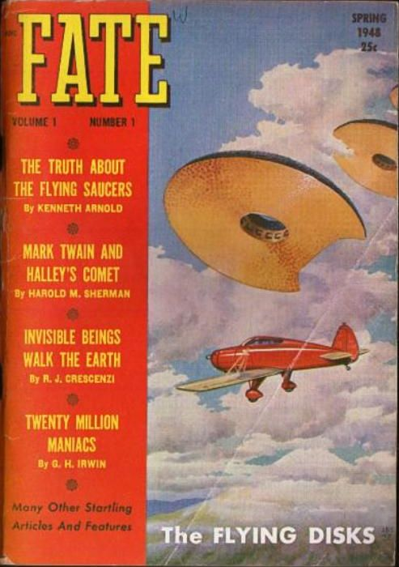
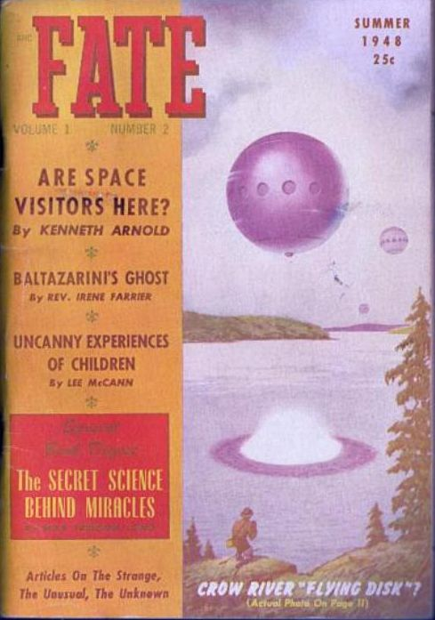

Couverture du n° de printemps de Fate contenant notamment le récit de
Kenneth E. Arnold

Avril
Eté
Couverture du n° d'été de Fate contenant un autre article de Arnold : "Des visiteurs de
l'espace sont-ils ici ?"

Publication d'une nouvelle sur "les 3 petits hommes verts"
Knight, Damon: "The Third Little Green Man", Planet Stories n° 11, vol. 3, été 1948.
Des astronomes repèrent à proximité de la Terre un corps céleste de 3 km de diamètre. La Terre et
Vénus semblent être ses pôles de direction. Il semble se diriger
vers l'une ou l'autre selon ses caprices. Le professeur Gustav Arhenius, de l'université de Berkeley (Californie),
l'étudiera à nouveau au début des années 1970s. Il apparaîtrait que ce corps évolue capricieusement et ne se
comporte pas comme un corps céleste homologué. Personne n'est capable de prévoir son orbite. Ce corps planétaire
inconnu possède d'ailleurs d'assez grandes similitudes avec Icare, un astéroïde de 1 km de diamètre qui
coupe sans scrupules l'orbite des planètes dont, pourtant, l'orbite ne se croise jamais. Il croise le chemin de la
Terre tous les 200 jours et change constamment de trajet. Malgré sa très grande vitesse, on pense qu'il est
influencé dans sa course par l'attraction des planètes.
En Asie Centrale soviétique, le paléontologue et écrivain de science-fiction
Ivan Efremov décrit la découverte d'un immense cimetière de dizaines de miliers de dinosaures dont les crânes sont
percés de trous nets, qu'il décrit comme les trous de balle, comme en .
J. Allen Hynek intègre la 2nde génération d'experts du projet
Sign à la demande de l'USAF.
À Swastika (Ontario, Canada), M. Galbraith voit par 2 fois un objet atterrir. La 1ère
fois, il voit un vaisseau de la forme d'un disque ainsi que 1 forme humaine. La 2nde fois il voit un appareil de la
forme d'un cigare et 3 formes humaines Quincy.